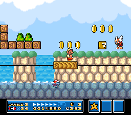

SUPER MARIO BROS. 3
Wiki
Levels
World 3
| World | Image | Overview |
|---|---|---|
| World 3-1 |
The first level in the Water Land, set in an underwater area with many Bloobers. |
|
| World 3-2 |
 | In this level the player is jumping on scattered and moving platforms while avoiding Cheep-Cheeps. |
| World 3-3 |
This level introduces Boss Bass. This level has the player running across platforms that are rising up and down in the water while avoiding getting eaten by Boss Bass. |
|
| World 3-  1 1 |
The first fortress level in the Water Land. In this fortress there are multiple doors where the player has to figure out which door leads to Boom Boom. |
|
| World 3-4 |
The fourth level features high and low hills with various enemies. |
|
| World 3-5 |
An underwater level, featuring Big Berthas and Jelectros. |
|
| World 3-6 |
An autoscrolling athletic level with platforms and donut lifts. |
|
| World 3-7 |
This level is set on the main land with Semisolid Platforms and Spikes. |
|
| World 3- 2 |
The second fortress level in the Water Land. This fortress introduces Stretches and is entirely underwater. |
|
| World 3-8 |
This level is similar to World 3-3, but with higher and lower platforms and beanstalks. |
|
| World 3-9 |
This level takes place both above land and underwater. |
|
| World 3-  |
The third airship level of the game, with Wendy O. Koopa as the boss. This level includes cannons, Turtle Cannons, Rocky Wrenches, and introduces Rocket Engines. |
|
| World 3-  |
Two pairs of Hammer Brothers patrol the map. Both arenas consist of two rows of seven breakable blocks. The arena differs depending on where they are fought on the map. If encountered on land, they will be fought in an area with a hill to the left as well as a row of bushes extending to the right. If encountered in the water, the floor will be submerged. Defeating one pair of Hammer Brothers will award the player with a Hammer defeating the other pair of Hammer Brothers will award the player with a Starman. |